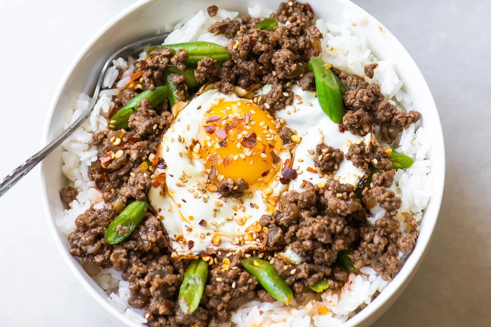

Korean Rice Bowl

Description:
If you like Asian cuisine, this is the dish for you! This dish is incredibly easy to make
and comes packful of flavor.
Ingredients:
- Vegetable oil
- 3 cloves garlic, minced
- 1/2 medium yellow onion, minced
- 1 lb of ground beef
- 10 green beans, sliced on the diagonal
- 4 cups of hot cooked jasmine rice
- Sesame seeds: optional
- Fried eggs: optional
- Chili oil: optional
Sauce:
- 3 Tbsp of Hoisin sauce
- 3 Tbsp of Dark soy sauce
- 1 Tbsp of Mirin, or rice wine, or sherry
- 1 tsp of sugar
- 1 Tbsp of toasted sesame oil
- 1 Tbsp of chili oil or chili paste
- 1 Tbsp of finely grated ginger
Directions:
- Heat a little oil in the bottom of a large skillet over medium to medium high heat. Add the onion and garlic and cook until the onion starts to soften.
Add the ground beef, breaking it apart with the edge of a spatula while it cooks. You want the meat to be as finely broken up as possible, so keep at it.
- Whisk together the sauce ingredients, and add to the pan, stirring to combine. Let simmer for a few minutes. Add the green beans and cook for a minute more.
- Divide the hot rice between four bowls, and then top with the beef. Garnish with the sesame seeds, chili oil, and fried eggs, if desired. Serve with sriracha sauce.
- Add any optional toppings that is included at the bottom of the ingredients list.